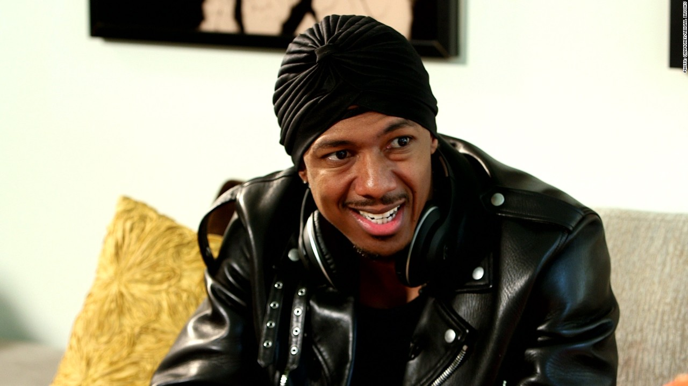

Nick Cannon Has Been Rehired
- 
After apologizing for controversial anti-Semitic comments he made last year, Nick Cannon will return as the host of the TV series “Wild ‘N Out.” His apology paved the way for a reunion with ViacomCBS, the parent company of the show’s network, VH1.
Nick Cannon Coming Back To Wild ‘N Out
Having patched things up with ViacomCBS, Hollywood mogul/rapper Nick Cannon will resume his role as host and star of “Wild ‘N Out,” the popular improv comedy show. Some of the biggest names in hip-hop have appeared on “Wild ‘N Out,” and the show has launched a number of comedians’ careers to the next level.
“I want to assure my Jewish friends, new and old, that this is only the beginning of my education — I am committed to deeper connections, more profound learning and strengthening the bond between our two cultures today and every day going forward.” (Nick Cannon)
Source